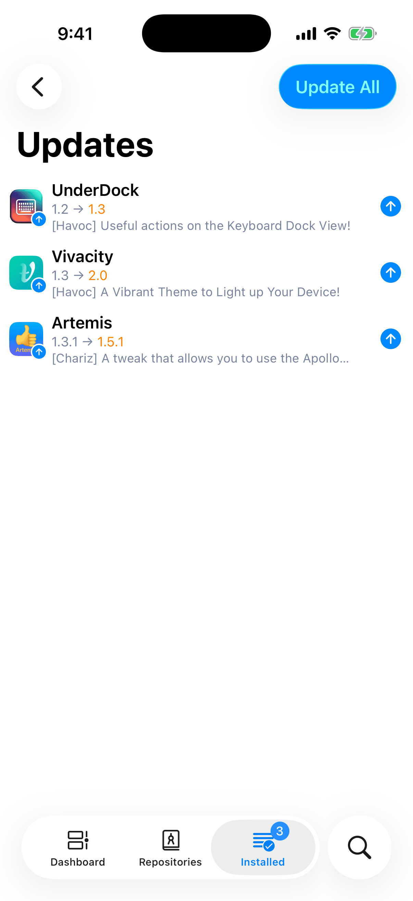
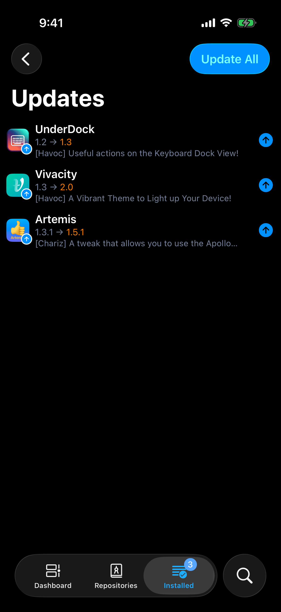
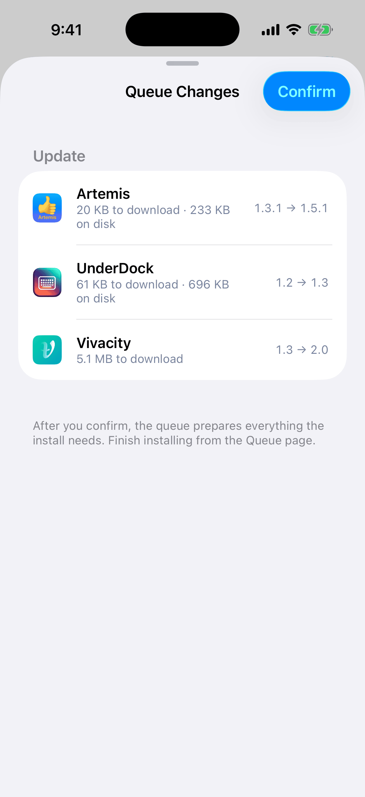
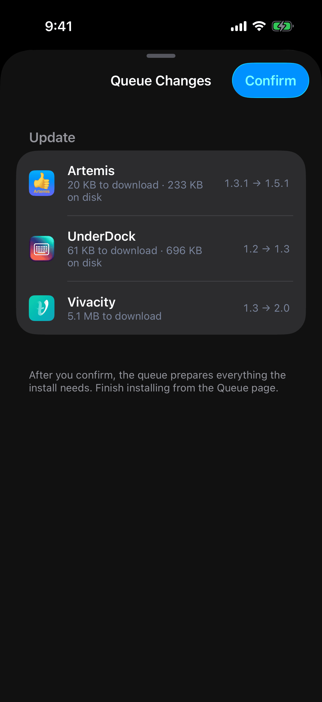
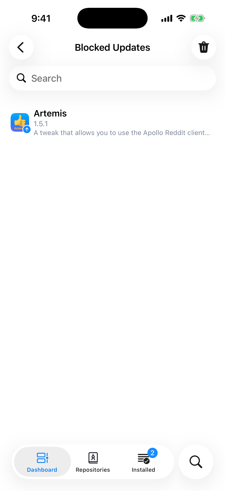
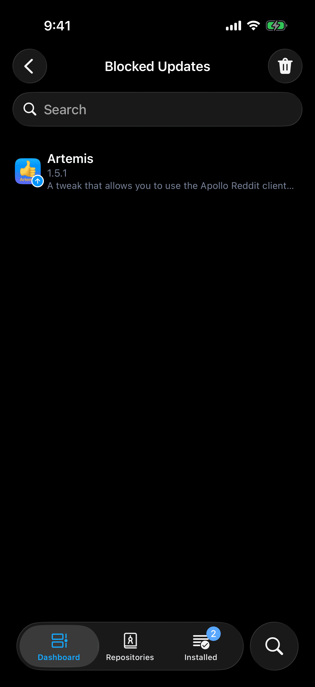

After this chapter you can update one package or all of them, hold one back at the version you have, and find out why an update does not show up.
Where Updates Appear
When a repository offers a newer version of a package you have installed, Irisin shows it in four places:
- The Installed tab carries a badge with the number of updates. With no updates there is no badge.
- On the Installed page, each row that has an update shows an up arrow.
- The bar of the Installed page has an up-arrow button. Tap it to open the Updates page.
- The Dashboard has an Updates section, present only while there is at least one update. The arrow button in its header opens the same Updates page.
With nothing to update, the button in the bar is a green checkmark instead. Tap it and Irisin answers All packages are up to date.
The Updates page lists every update, one row each. A row shows the installed version, an arrow, and the new version. Under that it names the repository in brackets, followed by the new version's description. Tap a row to open the new version's page. Tap the round arrow at the end of a row to queue that one update on its own. This page has nothing to refresh. It stays current with your repositories and your installed packages. When its list becomes empty, because you queued or blocked the last update, the page closes and returns you to where you came from.


Recent Updates on the Dashboard is a different list. It shows packages whose records in a repository changed recently. It is not the list of updates waiting for you.
Updates are found when repositories refresh, so a repository that has not been refreshed cannot show its newest versions; see Refresh and Status. Two controls do not check for updates. Pulling the Dashboard down only redraws it from what Irisin already has, and confirms with Refreshed. Refresh in the menu of the Installed page reads again what is installed on the device, not the repositories, and confirms with Installed packages refreshed.
Update All
- Open the Updates page: tap the up-arrow button in the bar of the Installed page.
- Tap Update All at the end of the bar.
- The Queue Changes sheet opens and shows the plan: every package that would be updated, and anything new those updates need. Nothing is queued yet.
- Tap Confirm. The sheet closes and Irisin reports Added to Queue.
- Open the queue and tap Execute. Nothing is installed until you do.
The sheet, the queue, and the button that runs it work as they do for any other request; see The Queue.


Update All never downgrades a package and never removes one to make room. If updating everything would require removing something you have installed, it refuses, and the sheet is a report that reads Updating everything would remove installed packages. Update packages one at a time. Queue the updates one by one from the Updates page, and read what each plan removes before you confirm it.
A package that cannot move to its newest version is named under the list, for example Example: kept at the current version by another package or a blocked update. Either another installed package requires the version you have, or you blocked that package's updates. The rest of the plan is unaffected.
To update some packages and not others, pick them on the Installed page:
- Open the menu on the Installed page and tap Select.
- Tick the rows you want.
- Tap Update in the bar at the bottom. The Queue Changes sheet opens with one plan for the whole selection.
Ticked rows that have no update stay as they are. A paid package or one that is not supported on this device cannot be updated in a batch. It is left out, and Irisin says Some Packages Left Out and Open their pages instead.
Block an Update
Block a package's updates when you want it to stay at the version you have.
- Open the package's menu: touch and hold its row in any list, or open its page and use the menu there. See The Package Menu.
- Tap Advanced.
- Tap Block Update.
It acts at once, with no confirmation, and reports Done. From then on the same place in the menu reads Unblock Update, which undoes it at once.
A blocked package is offered no newer version. It leaves the Updates page, the Updates section on the Dashboard, and the badge, and its row on the Installed page loses its arrow. Its page no longer offers Update, even when you open the newer version's own page. The one exception is a .deb file you open yourself: a file can still update a blocked package. Update All names a blocked package among those kept at the current version.
Block All Updates blocks every installed package at once. It is in the menu of the Installed page, in red, and only while at least one update exists. It acts with no confirmation, and the only way back is the Blocked Updates list below.
The Blocked Updates List
Open Settings → Packages → Blocked Updates. The page lists every package you are holding back, sorted by name, and you can search it.
- To unblock one package, tap its row to open the package's page, then choose Advanced and Unblock Update from its menu.
- To unblock everything, tap the trash button. Irisin asks Clear Blocked Updates? and warns This cannot be undone. Tap Clear to confirm; the list is emptied and the page closes. With nothing blocked, the button only reports No blocked updates.
- A row may read This package is no longer available. That package is not installed and no repository offers it any more; only the block remains.


When an Update Is Missing
A newer version reaches the Updates page, the badge, and the Dashboard only if it passes three checks.
- Not blockeda block hides every versionUndo with Unblock Update
- From its own repositoryanother repository does not countInstalled another way: any repository
- Built for this systemone that needs converting is heldTurn on Compatibility Updates
- Updatespage, badge and Dashboardlisted
Compatibility Updates appears only on roothide, where packages can be converted. On rootless there is no such row.
- It is not blocked. A blocked package is offered nothing. Look for it in Settings → Packages → Blocked Updates; see Block an Update.
- It comes from the right repository. A package that Irisin installed is offered updates only from the repository it came from. A newer version in some other repository does not count. A package that was installed another way, by a different package manager or by hand, has no repository on record. It is offered updates from any repository, and the first update you install sets its repository.
- It is built for this system. This check matters only on roothide, where Irisin can convert a rootless package. There, a newer version that would have to be converted does not count as an update until Compatibility Updates is on. Update All leaves such a package at its version and does not name it as kept back. See Compatibility Updates.
Separately, a package that dpkg has on hold stays at its version under Update All.
The second and third checks do not stop you from choosing the version yourself. Open the package's menu, tap Choose Version, pick the newer version, and install it from that version's own page; see Choose Version. A version that needs converting installs this way whether or not Compatibility Updates is on. The first check is the exception: a blocked package has to be unblocked first, because its page does not offer Update while the block stands.
If the update still does not appear, the repository may not have been refreshed since the new version was published. Refresh it, then look again; see Refresh and Status.
Compatibility Updates
Compatibility Updates is a switch in Settings → Packages. It exists only on a bootstrap where packages can be converted, which means roothide. On rootless there is no row, because nothing is converted there. The switch is off by default, and Irisin remembers your choice.
While it is off, a newer version that would have to be converted is left out of the Updates page, the badge, and the Dashboard, and Update All passes over it. You can still install it from that version's own page, as described in When an Update Is Missing.
Turning the switch on asks first. The alert is titled Allow Compatibility Updates? and reads An update to a package installed in compatibility mode is converted again. It may stop working and damage the system. The switch returns to off while the alert is up and stays on only after you tap Allow. Cancel leaves it off. Turning it off takes effect at once, with no confirmation.
Even with the switch on, a version built for this system is preferred over a newer one that needs converting. Installing a converted package still asks every time, with the Compatibility Mode alert and its Install Anyway button, however you reached it; see The Warning.
The footer of Settings, under the version, names the architectures Irisin can convert: Also installs packages for iphoneos-arm64. If your footer has no such line, your system converts nothing, and you will not find the switch.